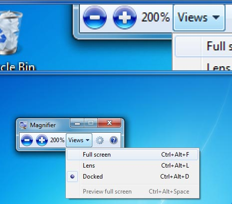

Dylan Sheffer
Accessibility Isn't Inaccessible!
🎉♿🎉What is Accessibility?
"The inclusive practice of removing barriers that prevent interaction with, or access to websites, by people with disabilities.Disabled World - Accessible Website Design Information
When sites are correctly designed, developed and edited, all users have equal access to information and functionality."
RealTalk
It is critical we do this right
"Yes. [The Internet is] an essential tool. And, literally, a lifeline for many disabled people... Many disabled people have to spend long hours alone. Voice-activated computers are a means of communication that can prevent a sense of isolation."- Christopher Reeve
(Comedic Reset)

So you want to be an Accessible Developer?
Common Questions

WTF is A11y?!?
A11y is a numeronym that stands for accessibility.
WTF is a Numeronym?!?
Numeronym is where you use numbers to represent the middle of a long word
A ... 11 letters ... y

Image provided by MDS
Other examples
- Internationalization (I18n)
- Localization (L10n)

WCAG, 508, Lawsuits?

WCAG
Web Content Accessibility Guidelines
The official guidelines published by the W3C on how to make the web accessible.

P.O.U.R
Perceivable
Operable
Understandable
Robust
Perceivable
Available to the senses either through the browser or through assistive technologies.
Operable
Users can interact with all controls and interactive elements using either the mouse, keyboard, or an assistive device.
Understandable
Content is clear and limits confusion and ambiguity.
Good Example

Bad Example

Image Source: Material.io
Robust
A wide range of technologies and devices can access the content.
A, AA, AAA, AAAHHHHHH!
The As are a levels of conformance to the WCAG
Level A
The very minimum needed, so that a website is usable for people with assistive technology

Junker car with a manual transmission
Level AA
What is needed for a good user experience in most cases
A typical sedan
Level AAA
Very helpful in certain circumstances, but is either excessive or impractical in other cases.

A Humvee
Section 508
Section 508 of the 1973 Rehabilitation Act
As of January 2018...
Section 508 == WCAG AA
Types of Disabilities
Motor
Visual
Auditory
Cognitive
Neurological
Temporary
Assistive Tech for Motor Disabilities


Single-Action Switch
Closing The GapAssistive Tech for Visual Disabilities
Braille Readers
Web AxeScreen Enlarger
 BlinddMobiel

Assistive Tech for Auditory Disabilities


Real Time Transcription
24 Hour Sign Language ServicesHow does assistive tech work with websites?
Accessibility Tree
A tree representation of the webpage that contains all meta-data about every page element.

What Assistive Tech Sees from the Tree
Name
State
Role
Value
You can inspect the a11y tree properties with Google's Accessibility Tools Plugin
How can I create a great A11y tree?
By utilizing HTML Semantic Elements!
<nav>
<button>
<section>
<h1>
Why HTML Semantics Matters
Heading
Headings convey page the page's hierarchy.
Shortcuts to see an overview of the page structure and to navigate to the desired heading
ARIA
Attributes used to modify the A11y Tree
Surgeon's Scalpel
What ARIA Does
- Modifies the accessibility tree by adding semantics
- Modifies existing semantics
- Express UI Patterns
- Add extra labels and descriptions
- Establishing relationships between elements
- Live Updates to a page
What ARIA Does Not Do
- Modify an element’s appearance
- Add focusability (tabbing)
- Add keyboard event handling
Those are added in via CSS and Javascript
Easy A11y Wins
Use Semantic HTML Tags
They're accessible by default
A lot of work must be done to make elements from scratch
Button
We miss out on all the affordances (expected behavior) of a button
- Styles for each button state
(pressed, disabled, etc) - Not tabable (focusable)
- Can't be triggered by synthetic clicks
(spacebar, enter, etc) - Announced by a screen reader incorrectly
If we make a custom element, we must add back ALL expected functionality
Guideline HereWhat about custom elements?
Start with a regular HTML element
Use ARIA tags to modify the difference
Example: Toggle Element
- Start with a button tag
- Add ARIA role of "switch"
- Give it the ARIA property of "aria-checked"
Ensure Proper Contrast and Text Size
UX PlanetEasier for everyone using the site!
Structure Document in Logical DOM Order
Assistive Tech reads the page from top to bottom
Very confusing to watch the focus ring jump around the page
Note: CSS Does NOT change the order of elements for assistive tech
Add Contextual Captions to Icons and Images
Icons without a label do not mean anything to screen readers
Image alt text needs to reflect the context
Testing
Automated Testing
Great for picking out low hanging fruit
- Deque's aXe plugin
- Google Chrome Lighthouse
- ESLint Packages
Manual Testing
Necessary because some things can't be automated
- Focus Ring
- Color contrast of text on images
- Screen Readers
- Usability
Tools and Resources
- WebAIM - Excellent Guides and Articles
- Excellent Tools, webinars, guides, podcasts, etc
- A11y Cast with Rob Dodson
- Google Developer Accessibility Docs
- OATMEAL - EBay's Open Accessibility Guidelines
- A11y Project - Beginners Checklist
- aXe Accessibility Audit Plugin
- HTML Code Sniffer
- Part of a Whole Blog
- Inclusive Components
- Reach - Accessible React Components
- Bulb Audit - Open Sourced Professional A11y Audit
- Color Safe - A11y Color Pallet Generator
- 18f - A11y Guide